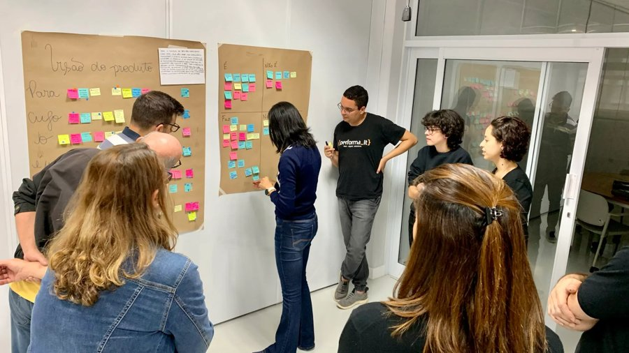
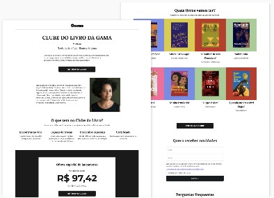

-
Plataforma ESG: estratégia, processo e impacto
O cliente buscava uma solução que ajudasse empresas com a implantação de ações ESG. O projeto incluiu imersão, entrevistas com especialistas e colaboração na definição de escopo e funcionalidades.
2023

-
Landing page para Clube do Livro
Criação de uma landing page para divulgar a primeira edição do Clube do Livro, promovido pela Revista Gama, com foco na conversão de inscrições.
2025
